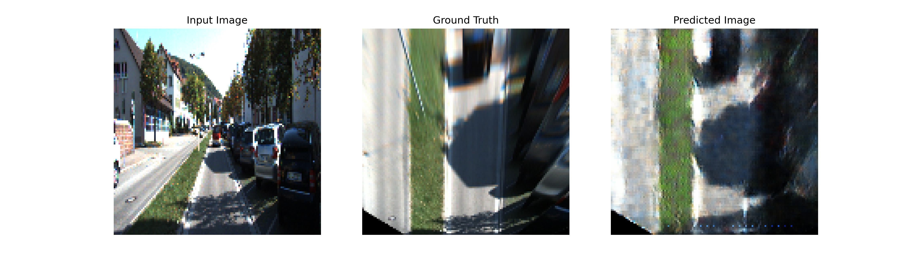
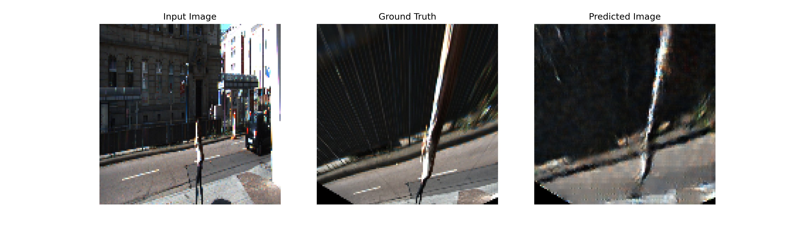
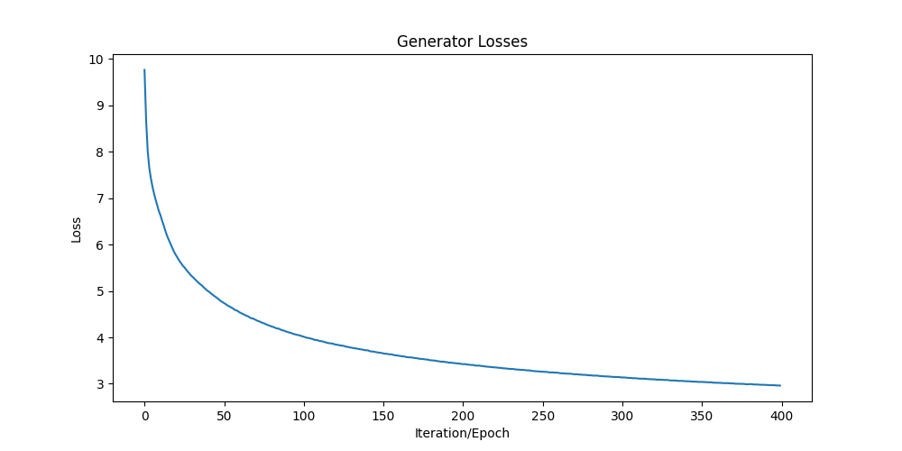

Generative AI · Computer Vision
IPM GAN
A conditional GAN that hallucinates a bird's-eye view of the road directly from a single front-facing camera image.

Overview
A Generative Adversarial Network that synthesizes a top-view (bird's-eye) map directly from a single front-facing camera image — learning the Inverse Perspective Mapping that would otherwise require explicit geometry and a calibrated ground plane.
Front-view frames were taken from the KITTI dataset, and ground-truth top views were produced with a custom homography calibration tool I built to pick point correspondences and compute the projection matrix. The GAN then learns to generate the top view directly from raw images, with no homography at inference time.
Academic project developed together with Alejandro Acosta and Oriol Contreras.
Demo
Homography calibration tool — building the paired dataset
Highlights
- Front-to-top-view translation without explicit geometry at inference
- Custom homography calibration tool to build the paired dataset
- Trained on KITTI front-view imagery
- Conditional generator + discriminator implemented in PyTorch
Gallery


